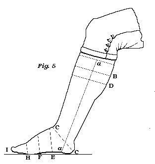
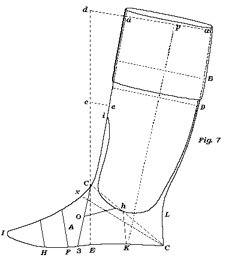
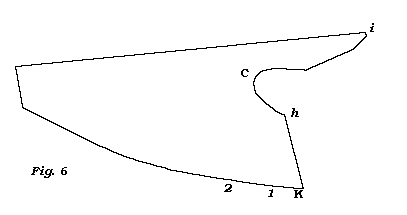
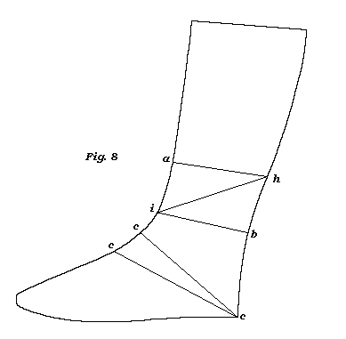

The Method of cutting a Man�s Boot.
It is rather singular that the generality of cutters are in. the constant habit
of cutting boots at random, that is without a regular and certain rule; though
without some rules they seldom attempt to cut shoes; but as boots are of more
consequence in the trade than shoes, they ought to have certain and fixed laws.
In the course of my practice I have seen boots from a great many parts of these kingdoms, and from many parts of the continent of Europe; but no two pair of them alike.
The leading shops in the metropolis are not regular in their mode of cutting boots; for from one and the same shop you will see various modes of cutting; which is a convincing proof that there is no regular system or order.
Here I speak from what I have seen; I do not pretend to say that none have taken into consideration the real form and movements of the foot and leg, and have applied a corresponding mode of cutting to answer the end; but, as I have said above, I have seen none.
In the first place it will be proper to show the method, how to take the measure of the foot and leg. We will suppose for a jockey or top boot.
Take the length of the foot as in fig. 5, from C to I, with the size-stick, same as directed in the shoe; then with a graduated piece of parchment* take the width round the foot at E, at F and H; then the width of the heel at c c, then the pitch or the first rise of the calf at D, and the width round the leig at D, likewise the height of the middle of the calf at B and its width, then the length a a and the width round the leg at a. If Hessian or Austrian half boots, you must take the length to B, or a little above and width at that height.

*By making use of a graduated strip of parchment you can enter the dimensions on the order-book; and if there should be no alteration in the person�s foot and leg, it will answer at any future period when an order is given without seeing the person. But a slip of paper is liable to many unforeseen accidents.
For the length of a half boot should be up full to the middle of the calf, or above if the leg be small, otherwise it will be very liable to sit loose and open from the leg; because the leg of the boot must be in every part as wide as the heel, otherwise it will be but with great difficulty got on; and there are but few men out of the number that you may measure whose legs below the middle of the calf are fuller then the heel: hence the reason of the above caution.
In the present mode of wearing boots, there is no necessity to take the first rise of the calf, but when the close boot was worn it was found necessary. For I have known a gentleman the first rise of the calf of whose leg was within three or four inches of the ankle, and fuller than his heel; and as close fitting boots were then the wear, and cordovan boot legs, which were taken in very much, and were made as elastic as possible; therefore without attention paid to the first swell of the calf, in cutting his boots, he would always feel too much pressure on the lower part of the calf. Here I caution the young beginner in case close-fitting boots should come in wear.
Now choose out a last that will answer to the dimensions of the foot. A block last is preferable for a boot, because you can form it to the size of the foot and the width of the heel, without being subject to the men, for their care to keep the instab leather in their proper place.
In the next place take the boot vamp patterns, and fit one to the last, and then cut out the vamps from a skin of the substance the work requires, and in the same order as directed for shoes: fold and crease the vamps with the black side out, and cut out the opening as in fig. 6, from h to c, of the same dimension as that in fig. 7. from h to c. and something deeper than from h. to K; and longer than from e to i, of fig. 7. that you may have room to cut the vamp smooth and even after it is cramped.


Then wet the vamps, that is, that part that is to he cramped, and with a leather strap, as that of a thin piece of welt, and fix one end of it by a tack at the right end of your cutting. board, and slip the other end of it between the folded vamp, and let it come to lie close against the back of the vamp, with the back part of the vamp towards you, and the end of the tongue towards your left hand. Then at a certain distance from you on the cutting-board fasten the vamp to the cutting-board as at 1 and 2, and then with the left hand strain the tongue of the vamp toward you by the leather strap, and at the same time hammer the opening of the vamp and tongue moderately. with the broad end of the hammer, that the cramp may be retained.
After you have cramped both tongues, and laid them smooth with the hammer, take the boot legs and strain out the draft well at the lower part, that there may be as little loose leather as possible about the ankles; and fold them in the middle with the black side outwards.
Though you have these things prepared, I would have you, previous to the cutting of them, to cut the form of the boot in pattern paper.
In fig. 7. is the form of the boot cut to the above dimensions. The side of the vamp a, to be exactly the width of one half the vamp, and the end h K to be under the ankle, and the lower part at K to be within the heel, as the boot will be firmer than when the seam is without, for it keeps the closing seam firm from plying or working.
The depth h K to be from two to two inches and a quarter, and to come just under the ankle; and from h to c, at the instab, to rise in a gradual curve or sweep, so that c may be at the bend of the foot at the instab; for if it be above that, the vamp will press too much on the flexor that comes from the leg to the instab to assist in moving the foot, and will cause the wearer to feel the boot rather uneasy. Therefore the width of the tongue of the vamp at that place should not he much wider than from seven-eighths of an inch to that of an inch, that the foot may have a free and an easy movement. Likewise the vamp at that place will sit smoother without wrinkles, much better than when it is very wide. Again, if the quarter of the boot should be lengthened to x, the sweep or curve of the tongue of the vamp h x will be too much below the ankle and the bend of the instab, and there will be a great deal too much loose leather about the ankles, from the leg and vamp of the boot; and besides having a very awkward and clumsy appearance, it will always sit loose and open from the leg and instab.
Therefore be careful to pay attention to the figure and the above directions, that you may avoid these two extremes, and especially the latter, as it is very awkward aud clumsy, and too generally found in boot-cutting.
Let the tongue of the vamp be about three inches and a half from c to the point at i*; and from c, to the middle, to run gradually wider till it becomes about an inch and a half wide, and from thence to the end at 1, to taper gradually to a point.
*That height of the tongue will keep the boot leg smooth in front, and cause it to lie close to the person�s leg.
In the next place cut the counter or back strap b, and let it join the vamp at h K, and to run of a gradual sweep towards the heel, and the depth in the middle between h and L to be about an eighth of an inch lower than it is at h*; and the width of the back strap at L to be about an inch; and the depth at L C to be in general about two inches and a half, which will be nearly at the bend of the heel behind; but from there up the leg let it be about three-eighths of an inch.
*For it will give more ease and freedom to the person�s heel to go in and come out of the foot of the boot; but, if higher, it will have the contrary effect, both in feel and in sight.
When taking the width of the heel c c, you must allow a certain space of the leg below c, at the heel, for to come under the sewing, and likewise the counter b, must be left wider than the leg, about a quarter of an inch, because of the substance of the leg and the middle piece.
Now let the vamp and counter, or back strap meet at h K, and put the last on them, and see that they have the same relation to the last as the vamp and quarter of the shoe, as directed under that article; and if not, you are to cut a little off, of both vamp and counter at h, or at K, till they do correspond.
Then take a half sheet of the same kind of paper, and let one side of it be quite straight, to represent the front of the boot leg, and place it under the vamp and counter, in the direction 3. c. i. a. for the upper part a. to be about two or three inches from the perpendicular E. c. d; because, when a man stands upright, the upper part of the leg just under the knee, as at a, is between two and three inches from a perpendicular, as a. is from d; that is, from the perpendicular E. c. d.
Three very material things arise from not placing the boot leg in the position of the man�s leg: First, if the boot leg be near a, perpendicular it will set off in front from the man�s leg; secondly, it will be in too great folds behind when the person stands erect; and thirdly, the person will have more trouble to get on such a boot.�And likewise if the length of the quarter of the boot L c, be cut as above directed, so as that the wide part of the vamp does not press on the flexor of the foot, and the boot leg to be in a perpendicular position, or nearly so; then the tongue of the boot, and the joining part of the boot leg, will set off from the upper part of the instab and the leg in a loose and clumsy form:�Therefore it will be better for the boot to exceed the position of the leg than otherwise; for then it will sit closer to the man�s leg in front, and without any folds behind when the boot is drawn up. and will go on with more ease.
Now you have the leg pattern in its proper position, 3. c. a, cut it even with the vamp and counter at the bottom from 3 to c, and let the curve of the tongue at c meet the edge of the leg pattern, and let the upper point of the tongue meet the edge of the same at i, and mark the leg pattern from the point i along the curve of the tongue to h; and prick two holes with the point of the awl, through the leg pattern, one at h, and the other at K.
Then cut off from the leg pattern the marked part till within a quarter of an inch to h, then cut it off sloping to o.�But mind, when you are cutting the boot leg, that you must not cut off as much from the boot leg between c and i as the full width of the tongue; because of the draft of the boot leg (commonly called); that is, it must be in proportion to the quantity taken in by the currier to make the leg elastic; which you may see by the given width, on the boot kg, and the apparent one, which you can measure.
Then, for an exact measurement, it will be, As the given width is to the apparent one, so will the width of the tongue, to the real width to be cut off from the leg at the tongue.
But in practice you will soon be able to guess the quantity; for it must be a little less than the real width of the tongue, for the above reasons:�Otherwise, if you cut off the boot leg the full width of the tongue or more, you will have the boot leg above the tongue to project out and hang over the tongue, and will remain so, as an incurable subject.
But at c the tongue only meets the leg, as in the patterns; therefore at that part there is nothing to be cut off the leg.
Now, after you have cut the front of the leg pattern out, put the vamp pattern to it, and see that they fit ; and if they do, put the weight on both between K and o; then with the graduated parchment boot measure* take the width of the heel from c to C; but not, so close to the edge at c, without leaving enough to come under the sewing stitch.
* Or, instead of taking the trouble to fold the parchment every time you take the dimensions, you may have a rule made of half the length, just the same as the parchment folded, which you will find more convenient.
Now take the vamp pattern away, and move the leg pattern with its front towards you in length of the cutting-board, that you may have it with more ease within your reach.�(So much for Patterns for exercise.)
Then take the lengths C D, C B the rise and middle of the calf, and the length K p; and the width at their respective lengths. With respect to the small, that is, the space between L and D, you must be governed by the heel, and the fancy of the wearer :�If the wearer should order them full at the small, the heel wiIl he out of the question; but if he should order them to be rather close, you must be guided by the heel*.�The leg in the small must be left the width of the heel, for the reasons in the last note; otherwise the boot will not go on or come off with ease.�And likewise, it is evident from the same note, that it is not the real width of the heel as c c, that makes its way in the boot, but the width of c e; and in consequence of the oblique direction of the foot entering the boot, that the boot leg is not required wider than the heel: And practice has taught the trade to know it; though I believe that few observe the cause.
*Here, I would have the young tyro observe, that when a man puts on a boot, when the foot is about half way down the leg of the boot, the rising part of the foot, the middle between the upper part of the instab and the great toe (or what the anatomists call metatarsus) is a collection of bones, five to number, and in many feet it protrudes very much.� This part presses against the front of the boot, and the tip of the heel against the hind part, and the line of their position is in an oblique direction, as the line h i in fi.8.

And this part of the foot is nearly three inches lower down in the boot, as at i, than the tip of the heel at h.� Now a h, and i b are parallel to each other, and the angles at a, and b, are nearly right angles; and take them as such, we have an easy rule to find the width i b, or a h, by squaring i h, and taking the square of i a, or b h, from it, and the square root of the difference will be the width at a h or i b, and it will be found a trifle more than the width of the heel c c. But when the heel goes down to b, the rising part of the foot will be down in the foot of the boot at c; therefore at b, the boot leg may be cut something less than the heel, as the foot is getting far into the foot of the boot.�As the leg will admit to be cut under the width of the heel at b, you can cut the boot sloping from c to b to fit the form of the heel, which will cause that part of the boot leg to sit closer round the ankle than if the leg was left wider at b. Though lately, fashion has prevailed over the natural form of the heel of the loot, by cutting the boot from the lower part of the heel to the calf in a curve projecting from the heel; so that the wearer is not able to keep his foot firm in the foot of the boot; because the form of the boot gives room for his heel to slip up and down in the heel of the boot.�So much for fashion.
Though the heel be the guide for the boot leg in the small, I have known persons to get on boot near two inches less than the heel ; but they were persons who had no protruding part on the instab, and who could straighten the foot at the ankle very much.
And I have known others who could hardly move the ankle joint from that of a walking posture without any apparent cause: therefore a certain allowance was necessary above the width of the heel.
By observing the foot coming out of a boot, you will see that after the person�s foot comes just out of the foot of the boot, the tip of the heel will press against the back part of the boot leg, and force it into a curve, till the heel comes to the full of the calf; then the heel in general is lost in the width.
The front of the boot leg. is straight, and the room for the heel must be behind; but it should not be much fuller than the width of the heel, only that it should go on and come off with ease.
Some would wish to have always their back strap boots, whether Austrian or jockey, to keep that curve that the heel makes, like that of a Hessian boot; but to effect that, they should often be put on the boot trees, and previously damped; then left on till they become perfectly dry.
Now, after these observations concerning the heel and the small of the boot leg, let the boot leg be cut behind as per fig. 7. in the direction C, L, D, B, a, to the real width of the person�s leg, and especially at B and a; but at D it may be left to the fancy of the times or the wearer; hut if ordered to fit the leg at that part, you must cut it to the measure.
Almost all boot legs have the width at the small marked on them; and if not, you may cut a narrow strip off the bottom of the boot leg, and strain it out well, and it will give the width by measurement.�The real width of the boot leg at the small, and the narrow part of the tongue of the vamp between c and i are to be added together, and the sum to be compared with the width of the person�s heel; and after allowing a certain portion more than the real width of the heel, that is, for what may be taken in by the closing, cut off the difference from the boot leg, as from L to D; if the boot leg be wider than the heel, &c.
Now you have cut the leg to the size, mark off the length as at
a, a, fig. 7. quite square; and if it be a whole boot leg, (though very few of them are used
now, on the account of the tops) mark off the length of the top from a a, to
the length it is to be, and cut the remainder off; but let the bind part of the
lower part of the top be about a quarter of an inch deeper than the front,
because the projection of the calf re�quires it, to appear even in prospect.
Then fold the leg at a a, and let the top part come between the boot leg and
the cutting-board, and let them be even in front; then cut the top part to the
leg, hut not quite close at the lower part of the top.
But if the top is to be sewed on, let the boot leg be about a quarter to half an inch shorter than the real length is to be, and cut a paper pattern for the top.
First fold half a sheet of any kind of paper, and put it under the boot leg on the cutting- board, and let the folded part be even with the front of the boot leg, and cut it even with the upper part of the boot leg, as at a a, fig. 7. that you may have both ends to correspond; then fold as much of the top pattern at the same end, as the boot leg is too abort, and from that fold mark off the length the top is to be, and cut the remainder off: But as I mentioned above, for the whale boot leg let the lower part of the top pattern behind be deeper than the front, about a quarter of an inch; but if the leg be full, half an inch will not be too much.
Then put the boot leg on the top patterns, and let the upper part of the boot leg meet the folded part of the pattern, and be sure that they are even in front.; and then cut the pattern behind to the leg. After you have cut out the tops by the pattern, let there be some fine whity brown paper pasted on the inside of the top, to prevent the oil from the leg getting into the top: For the modern boot tops, dressed as they are in acids and alkali, will imbibe every kind of liquid that may come in contact with them.
The counters or back straps are to be cut as above directed. Then you must fit up the boot legs with side linings, and good middle piece to put between the counter or back strap and the leg, and to be so long as to come beyond the heel on each side; for, as there is no feather to the inner sole of the boot behind, unless there is a proper substance at the counter to prevent the boot leg to bend short at the heel, the boot leg will soon crack and break off at the heel.
Now to close this article I shall make one general observation.
Always be careful to place the boot leg as near as you can in the position of the person�s leg, (for the above reasons) as in the direction 3. c, i, a, fig. 7.
The counter, or counter part of the back strap, should be up as high as the bend of the foot at the heel, about two inches and a half, as C L; then from the top of the counter, let there be a gradual sweep or curve from L to h, and from h to c; that is, the sweep to come from the bend of the heel behind gradually under the ankle, and then up to the upper part of the instab, nearly to the bend of the foot at that place; but so that the flexor of the foot may have a free movement.
But mind, it should be no lower down, as in the direction of h x; there it will have a very awkward appearance, besides its giving too much loose leather round the ankles.
Let the tongue of the vamp be cut so that it may be rather strained in the
length, in the closing, than be too full.
When you have obtained that experience, so as to be able to cut the boot at the
ankle to any form, at your own will and pleasure; then the other parts will
become perfectly easy: and till you have mastered that, be constantly in the
habit of cutting patterns to answer the end, to fit the foot and ankle.
Hessian Boots.